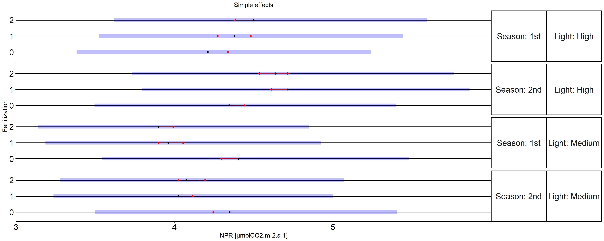

Análisis de componentes principales en Calafate (Berberis mycrophylla)
Variables respuesta:
TFS: Total fruiting shoots per plant
FNP: Fruit number per plant
FFWP: Fresh fruit weight per plant
FFW: Fresh fruit weight
DFW: Dry fruit weight
EFD: Equatorial fruit diameter
PFD: Polar fruit diameter
FC: Fruit color FF: Fruit
firmness
NPR: net rate of photosynthesis (irradiance=500)
Resultado PCA
## Importance of components:
## PC1 PC2 PC3 PC4 PC5 PC6
## Standard deviation 2.27780 1.62807 1.08280 0.765469 0.432513 0.338756
## Proportion of Variance 0.51884 0.26506 0.11725 0.058590 0.018710 0.011480
## Cumulative Proportion 0.51884 0.78390 0.90115 0.959740 0.978450 0.989920
## PC7 PC8 PC9 PC10
## Standard deviation 0.286428 0.124406 0.0522478 0.0225508
## Proportion of Variance 0.008200 0.001550 0.0002700 0.0000500
## Cumulative Proportion 0.998130 0.999680 0.9999500 1.0000000Heatmap

Scree plot para ver la varianza explicada por cada Principal component
Contribuciones de las variables para CP1
Contribuciones de las variables para CP2
## PFD TFS FNP FFWP FFW EFD
## 16.86735166 15.85356221 15.06028516 12.73709636 11.84729475 10.86413781
## DFW FC FF NPR
## 9.87552803 3.20620527 2.48003648 1.20850226## FF FC DFW EFD FFW
## 28.850368554 16.367720925 14.532065290 13.960164255 9.400301230
## TFS FNP FFWP NPR PFD
## 4.907607824 4.566675000 4.544580145 1.890762022 0.979754755## NPR FC FFW FFWP EFD
## 57.90987691698 18.20666987293 6.81497817463 5.25576843875 4.15329213093
## FNP PFD FF DFW TFS
## 2.76344426718 1.87042745859 1.58654962654 1.43617003827 0.00282307519Contribución acumulada de cada variable a CP1 y CP2
## FF EFD DFW FFW TFS FNP
## 31.33040503 24.82430206 24.40759332 21.24759598 20.76117004 19.62696016
## FC PFD FFWP NPR
## 19.57392620 17.84710642 17.28167651 3.09926429Proporción de contribución de cada variable a PC1, PC2 y PC3

Biplots de PCA CP1 VS CP2
Biplots de PCA CP1 VS CP3

Triplots
Triplots (rlg)
Análisis univariado Tasa de fotosíntesis (NPR)
## Analysis of Deviance Table (Type II Wald chisquare tests)
##
## Response: NPR_aj
## Chisq Df Pr(>Chisq)
## Fertilization 2.15535 2 0.34038584
## Light 82.71432 1 < 0.000000000000000222 ***
## Season 10.97372 1 0.00092413 ***
## Fertilization:Light 62.07037 2 0.000000000000033235 ***
## Fertilization:Season 2.75496 2 0.25221277
## Light:Season 2.86543 1 0.09050169 .
## Fertilization:Light:Season 2.84595 2 0.24099552
## ---
## Signif. codes: 0 '***' 0.001 '**' 0.01 '*' 0.05 '.' 0.1 ' ' 1Efectos simples
## $emmeans
## Light = High, Season = 1st:
## Fertilization response SE df asymp.LCL asymp.UCL
## 0 4.20904523 0.470139756 Inf 3.38147766 5.23914794
## 1 4.37800964 0.486377223 Inf 3.52137310 5.44303823
## 2 4.49910600 0.500686475 Inf 3.61742559 5.59567967
##
## Light = Medium, Season = 1st:
## Fertilization response SE df asymp.LCL asymp.UCL
## 0 4.40507907 0.490233717 Inf 3.54180743 5.47876248
## 1 3.96015756 0.439881068 Inf 3.18539902 4.92335428
## 2 3.89813464 0.433048349 Inf 3.13542097 4.84638390
##
## Light = High, Season = 2nd:
## Fertilization response SE df asymp.LCL asymp.UCL
## 0 4.34386179 0.481936439 Inf 3.49492719 5.39900669
## 1 4.71483759 0.523729339 Inf 3.79240172 5.86163997
## 2 4.63757120 0.515146870 Inf 3.73025155 5.76558076
##
## Light = Medium, Season = 2nd:
## Fertilization response SE df asymp.LCL asymp.UCL
## 0 4.34718603 0.482874924 Inf 3.49670354 5.40452633
## 1 4.02309944 0.446863473 Inf 3.23604120 5.00158314
## 2 4.07497300 0.454739668 Inf 3.27443482 5.07122782
##
## Confidence level used: 0.95
## Intervals are back-transformed from the log scale
##
## $contrasts
## Light = High, Season = 1st:
## contrast ratio SE df null z.ratio
## Fertilization0 / Fertilization1 0.961406112 0.0236241441 Inf 1 -1.602
## Fertilization0 / Fertilization2 0.935529241 0.0237925240 Inf 1 -2.620
## Fertilization1 / Fertilization2 0.973084350 0.0220077224 Inf 1 -1.206
## p.value
## 0.2449
## 0.0239
## 0.4493
##
## Light = Medium, Season = 1st:
## contrast ratio SE df null z.ratio
## Fertilization0 / Fertilization1 1.112349448 0.0250770927 Inf 1 4.723
## Fertilization0 / Fertilization2 1.130047953 0.0255582856 Inf 1 5.406
## Fertilization1 / Fertilization2 1.015910923 0.0219128019 Inf 1 0.732
## p.value
## <.0001
## <.0001
## 0.7446
##
## Light = High, Season = 2nd:
## contrast ratio SE df null z.ratio
## Fertilization0 / Fertilization1 0.921317375 0.0191415625 Inf 1 -3.944
## Fertilization0 / Fertilization2 0.936667408 0.0194611077 Inf 1 -3.149
## Fertilization1 / Fertilization2 1.016660960 0.0218510877 Inf 1 0.769
## p.value
## 0.0002
## 0.0047
## 0.7222
##
## Light = Medium, Season = 2nd:
## contrast ratio SE df null z.ratio
## Fertilization0 / Fertilization1 1.080556445 0.0232257611 Inf 1 3.605
## Fertilization0 / Fertilization2 1.066801185 0.0256364328 Inf 1 2.691
## Fertilization1 / Fertilization2 0.987270207 0.0237239988 Inf 1 -0.533
## p.value
## 0.0009
## 0.0195
## 0.8550
##
## P value adjustment: tukey method for comparing a family of 3 estimates
## Tests are performed on the log scale## $`simple contrasts for Fertilization`
## Light = High, Season = 1st:
## contrast ratio SE df asymp.LCL
## Fertilization1 / Fertilization0 1.040143169 0.0255589098 Inf 0.991235799
## Fertilization2 / Fertilization0 1.068913675 0.0271847775 Inf 1.016938629
## Fertilization2 / Fertilization1 1.027660140 0.0232420336 Inf 0.983101474
## asymp.UCL null z.ratio p.value
## 1.091463620 1 1.602 0.1092
## 1.123545132 1 2.620 0.0088
## 1.074238410 1 1.206 0.2277
##
## Light = Medium, Season = 1st:
## contrast ratio SE df asymp.LCL
## Fertilization1 / Fertilization0 0.898998064 0.0202672441 Inf 0.860139812
## Fertilization2 / Fertilization0 0.884918199 0.0200141879 Inf 0.846547845
## Fertilization2 / Fertilization1 0.984338270 0.0212317921 Inf 0.943592077
## asymp.UCL null z.ratio p.value
## 0.939611803 1 -4.723 <.0001
## 0.925027716 1 -5.406 <.0001
## 1.026843966 1 -0.732 0.4643
##
## Light = High, Season = 2nd:
## contrast ratio SE df asymp.LCL
## Fertilization1 / Fertilization0 1.085402302 0.0225506395 Inf 1.042091667
## Fertilization2 / Fertilization0 1.067614814 0.0221817977 Inf 1.025012602
## Fertilization2 / Fertilization1 0.983612078 0.0211407682 Inf 0.943037545
## asymp.UCL null z.ratio p.value
## 1.130512981 1 3.944 0.0001
## 1.111987685 1 3.149 0.0016
## 1.025932346 1 -0.769 0.4420
##
## Light = Medium, Season = 2nd:
## contrast ratio SE df asymp.LCL
## Fertilization1 / Fertilization0 0.925449110 0.0198918437 Inf 0.887271629
## Fertilization2 / Fertilization0 0.937381786 0.0225263390 Inf 0.894254594
## Fertilization2 / Fertilization1 1.012893930 0.0243397341 Inf 0.966294896
## asymp.UCL null z.ratio p.value
## 0.965269290 1 -3.605 0.0003
## 0.982588872 1 -2.691 0.0071
## 1.061740177 1 0.533 0.5939
##
## Confidence level used: 0.95
## Intervals are back-transformed from the log scale
## Tests are performed on the log scale
##
## $`simple contrasts for Light`
## Fertilization = 0, Season = 1st:
## contrast ratio SE df asymp.LCL asymp.UCL null
## Medium / High 1.046574422 0.0266156807 Inf 0.995687395 1.100062153 1
## z.ratio p.value
## 1.790 0.0735
##
## Fertilization = 1, Season = 1st:
## contrast ratio SE df asymp.LCL asymp.UCL null
## Medium / High 0.904556610 0.0195140918 Inf 0.867107004 0.943623633 1
## z.ratio p.value
## -4.650 <.0001
##
## Fertilization = 2, Season = 1st:
## contrast ratio SE df asymp.LCL asymp.UCL null
## Medium / High 0.866424272 0.0195943595 Inf 0.828858729 0.905692360 1
## z.ratio p.value
## -6.340 <.0001
##
## Fertilization = 0, Season = 2nd:
## contrast ratio SE df asymp.LCL asymp.UCL null
## Medium / High 1.000765272 0.0207905478 Inf 0.960834996 1.042354967 1
## z.ratio p.value
## 0.037 0.9706
##
## Fertilization = 1, Season = 2nd:
## contrast ratio SE df asymp.LCL asymp.UCL null
## Medium / High 0.853284841 0.0183437029 Inf 0.818078753 0.890006025 1
## z.ratio p.value
## -7.380 <.0001
##
## Fertilization = 2, Season = 2nd:
## contrast ratio SE df asymp.LCL asymp.UCL null
## Medium / High 0.878686888 0.0211184461 Inf 0.838255256 0.921068662 1
## z.ratio p.value
## -5.381 <.0001
##
## Confidence level used: 0.95
## Intervals are back-transformed from the log scale
## Tests are performed on the log scale
##
## $`simple contrasts for Season`
## Fertilization = 0, Light = High:
## contrast ratio SE df asymp.LCL asymp.UCL null z.ratio
## 2nd / 1st 1.03203020 0.0246469714 Inf 0.984836168 1.08148580 1 1.320
## p.value
## 0.1868
##
## Fertilization = 1, Light = High:
## contrast ratio SE df asymp.LCL asymp.UCL null z.ratio
## 2nd / 1st 1.07693632 0.0232287625 Inf 1.032357701 1.12343990 1 3.436
## p.value
## 0.0006
##
## Fertilization = 2, Light = High:
## contrast ratio SE df asymp.LCL asymp.UCL null z.ratio
## 2nd / 1st 1.03077616 0.0232367558 Inf 0.986224424 1.07734047 1 1.345
## p.value
## 0.1787
##
## Fertilization = 0, Light = Medium:
## contrast ratio SE df asymp.LCL asymp.UCL null z.ratio
## 2nd / 1st 0.98685766 0.0222469719 Inf 0.944203646 1.03143855 1 -0.587
## p.value
## 0.5573
##
## Fertilization = 1, Light = Medium:
## contrast ratio SE df asymp.LCL asymp.UCL null z.ratio
## 2nd / 1st 1.01589378 0.0218351971 Inf 0.973986486 1.05960420 1 0.734
## p.value
## 0.4632
##
## Fertilization = 2, Light = Medium:
## contrast ratio SE df asymp.LCL asymp.UCL null z.ratio
## 2nd / 1st 1.04536487 0.0251925577 Inf 0.997136335 1.09592607 1 1.841
## p.value
## 0.0656
##
## Confidence level used: 0.95
## Intervals are back-transformed from the log scale
## Tests are performed on the log scale
Análisis de fotorespiración
## # A tibble: 9 × 3
## Light Fertilization x_intercept
## <fct> <fct> <dbl>
## 1 High 0 40.4
## 2 High 1 28.8
## 3 High 2 24.4
## 4 Medium 0 30.0
## 5 Medium 1 32.9
## 6 Medium 2 28.9
## 7 Low 0 44.1
## 8 Low 1 38.9
## 9 Low 2 32.6